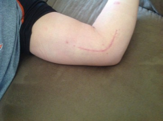

Last year on October 12th I had to undergo Tommy John Surgery. I tore a ligament in my elbow called the Ulnar Collateral Ligament and it had to be reconstructated so I would be able to pitch again. The surgery left me with a scar on my elbow that I will have for a long time, here is a picture of what the scar looks like:

Back to Home Page